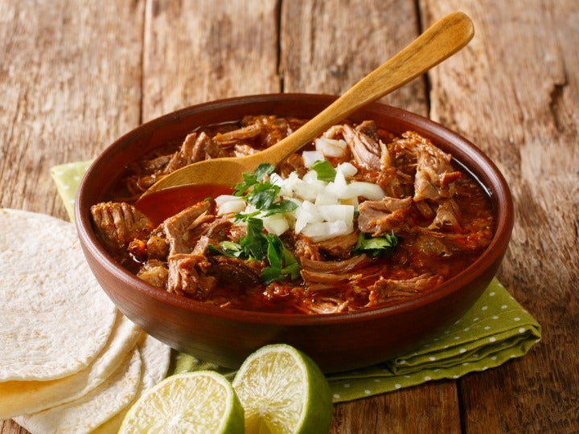
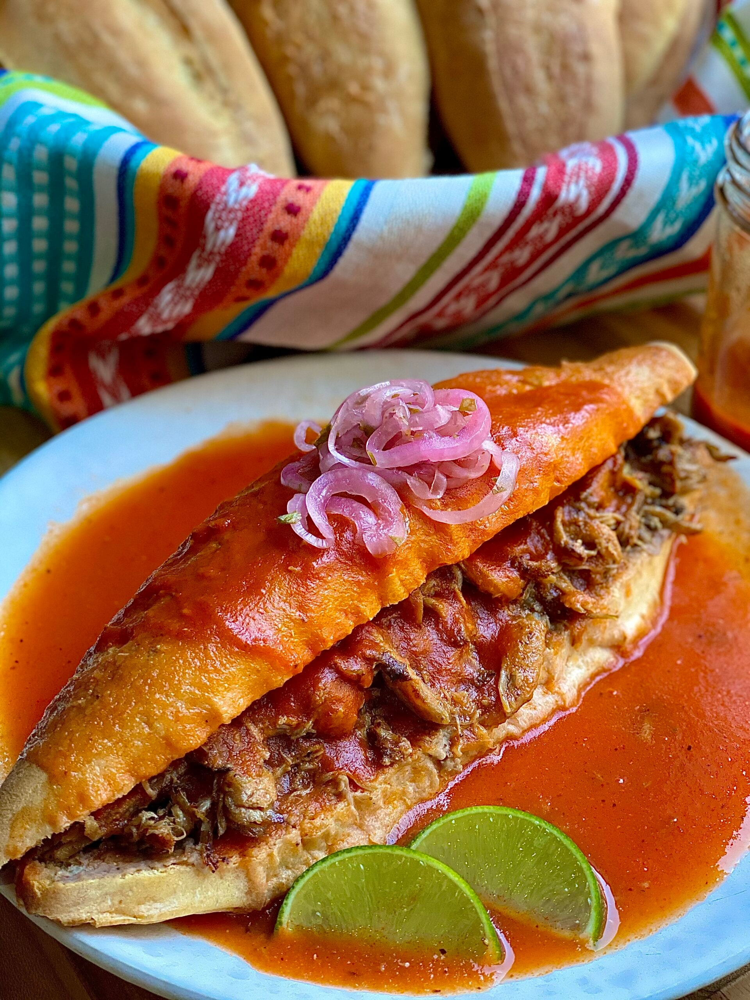
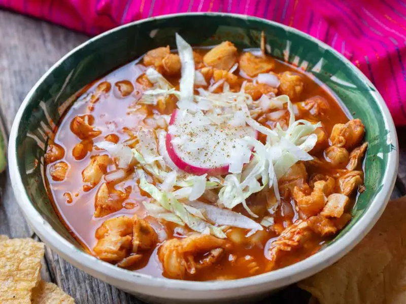
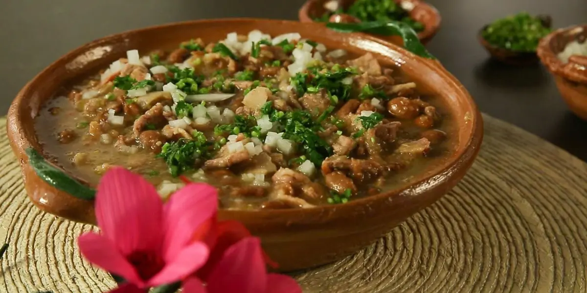
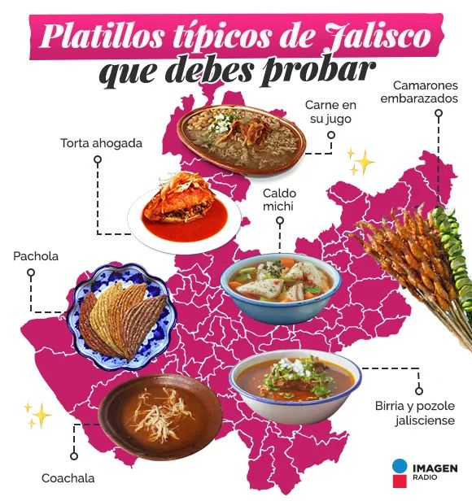

"La cocina jalisciense es símbolo de tradición, identidad y orgullo mexicano gracias a la variedad de sus platillos."

La gastronomía jalisciense es una de las más reconocidas de México por la riqueza de sus sabores y sus recetas tradicionales. Se caracteriza por el uso del maíz, carne de res, cerdo, jitomate, chiles y especias que dan origen a platillos muy representativos. Además de su deliciosa comida, Jalisco es famoso por ser la tierra del tequila y del mariachi, elementos que forman parte de la cultura mexicana.
A continuación se presentan algunos de los alimentos más representativos del estado de Jalisco y sus principales ingredientes.
| Nombre | Imagen | Ingredientes |
|---|---|---|
| Birria |
 |
Carne de res o chivo, chiles secos, ajo, cebolla, jitomate y especias. |
| Torta Ahogada |
 |
Pan birote, carnitas de cerdo, salsa de jitomate y salsa de chile de árbol. |
| Pozole Rojo |
 |
Maíz cacahuazintle, carne de cerdo, chile guajillo, lechuga, rábano y orégano. |
| Carne en su Jugo |
 |
Carne de res, tocino, frijoles, cilantro y cebolla. |
| Jericalla |
|
Leche, huevo, azúcar, vainilla y canela. |
¿Sabías que...?
La birria nació en Jalisco durante la época colonial y actualmente
es uno de los platillos mexicanos más famosos en el mundo. Tradicionalmente
se preparaba con carne de chivo, aunque hoy en día también se cocina con
carne de res.
"Jalisco, donde cada platillo refleja el sabor de México."